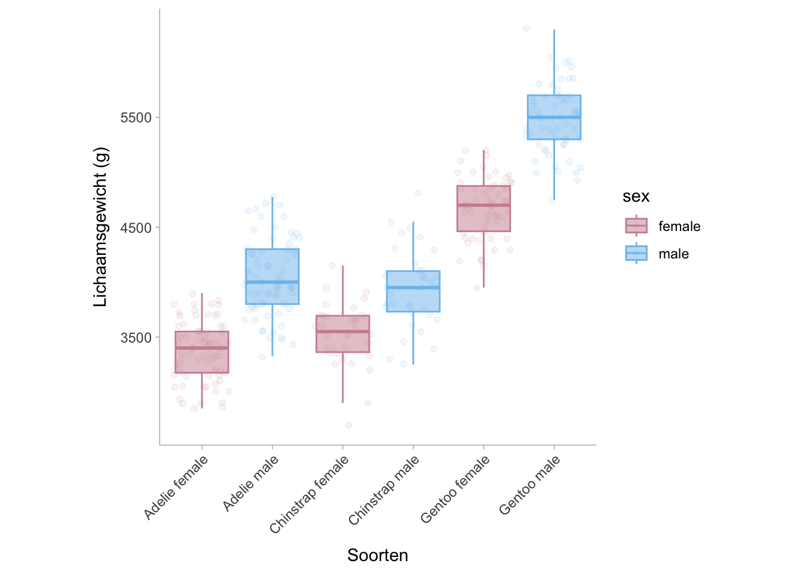

samenwerken, betrouwbaarheidsinterval, effect size, open onderwijsbron, open studiebeurs, open wetenschap
10.1 ANOVAs
Voor ANOVA’s/F-tests moet je altijd twee soorten effecten rapporteren: het omnibuseffect van de factor(en) en het effect van geplande contrasten of post-hocvergelijkingen.
Stel je bijvoorbeeld voor dat je drie groepen/condities vergelijkt met een eenzijdige ANOVA. De ANOVA zal eerst een F-statistiek, de vrijheidsgraden en de bijbehorende p-waarde opleveren. Hier moet u de grootte van dit omnibusfactoreffect berekenen in eta-kwadraat, partiële eta-kwadraat of gegeneraliseerde eta-kwadraat.
Stel dat het omnibuseffect significant is. U weet nu dat er ten minste één groep verschilt van de anderen. Je wilt weten welke groep(en) verschilt (verschillen) van de anderen en hoeveel ze verschilt (verschillen). Daarom voer je post hoc vergelijkingen uit op deze groepen. Omdat post hoc vergelijkingen elke groep paarsgewijs vergelijken met de anderen, krijg je een t-statistiek en p-waarde voor elke vergelijking. Hiervoor kun je een gestandaardiseerd gemiddeld verschil berekenen en rapporteren.
Stel je voor dat je twee onafhankelijke variabelen of factoren hebt en je voert een twee-bij-twee factorial ANOVA uit. Het eerste wat je dan doet, is kijken naar de interactie. Als de interactie significant is, rapporteer je opnieuw de bijbehorende omnibus effectgrootte maten, en ga je verder met het analyseren van de enkelvoudige effecten. Afhankelijk van je onderzoeksvraag vergelijk je de niveaus van de ene IV op elk niveau van de andere IV. U rapporteert d of g voor deze enkelvoudige effecten. Als de interactie niet significant is, kijkt u naar de hoofdeffecten en rapporteert u het bijbehorende omnibuseffect. Vervolgens analyseert u het hoofdeffect door de niveaus van één IV te vergelijken terwijl u de niveaus van de andere IV samenvoegt/aggregeert. U rapporteert d of g voor deze paarsgewijze vergelijkingen. Merk op dat effecten van lagere orde niet direct interpreteerbaar zijn als effecten van hogere orde significant zijn. Als je een significante interactie hebt in een tweezijdige ANOVA, kun je de hoofdeffecten niet direct interpreteren. Als u een significante drieweginteractie hebt in een drieweg ANOVA, kunt u de hoofdeffecten of de tweerichtingsinteracties niet rechtstreeks interpreteren, ongeacht of ze significant zijn of niet.
10.2 ANOVA tabellen
Een ANOVA-tabel bestaat over het algemeen uit de groeperingsfactoren (+ residuen), de som van de kwadraten, de vrijheidsgraden, het gemiddelde kwadraat, de F-statistiek en de p-waarde. In basis-R kunnen we een ANOVA-tabel maken met de functie aov() om het ANOVA-model te genereren en vervolgens met summary.aov() om de tabel te extraheren. Voor een voorbeeldcase gebruiken we het palmerpenguins datasetpakket en onderzoeken we de verschillen in de lichaamsmassa (de uitkomst) van drie pinguïnsoorten (de voorspellende/groeperende variabele):
library(palmerpenguins)# construct anova model # formula structure: outcome ~ grouping variableANOVA_mdl <-aov(body_mass_g ~ species, data = penguins) # datasetANOVA_table <-summary.aov(ANOVA_mdl)ANOVA_table
Df Sum Sq Mean Sq F value Pr(>F)
species 2 146864214 73432107 343.6 <2e-16 ***
Residuals 339 72443483 213698
---
Signif. codes: 0 '***' 0.001 '**' 0.01 '*' 0.05 '.' 0.1 ' ' 1
2 observations deleted due to missingness
Standaard rapporteert summary.aov() de \(\eta^2\) waarde niet, maar we zullen dit verder bespreken in Section 10.7.1. De resultaten tonen aan dat de gemiddelde lichaamsmassa van de drie pinguïnsoorten (Adelie, Gentoo, Chinstrap) significant van elkaar verschillen.
10.3 Eenzijdige ANOVA tussen proefpersonen
ANOVA is een uitbreiding van onafhankelijke t-tests. De nulhypothese is dat alle k gemiddelden van k onafhankelijke groepen identiek zijn, terwijl de alternatieve hypothese is dat er minstens twee gemiddelden van deze k groepen verschillen. De aannames zijn onder andere: (1) onafhankelijkheid van waarnemingen, (2) normaliteit van residuen, en (3) gelijkheid (of homogeniteit) van varianties (homoscedasticiteit).1
Opmerking. Soms kun je een between-subject one-way ANOVA tegenkomen die slechts twee condities vergelijkt, vooral als het papier oud is. Dit is in wezen een t-toets en de F-statistiek is gewoon t-kwadraat. Het verdient de voorkeur om Cohen’s d voor deze tests te rapporteren. Als je de effectgrootte voor dergelijke tests berekent, kun je het beste Cohen’s d berekenen, of de verstrekte eta-kwadraat omrekenen naar Cohen’s d, omdat Cohen’s d de richting van het effect kan laten zien. Latere analyses (bijv. poweranalyse) kunnen ook worden gebaseerd op Cohen’s d.
Het is heel eenvoudig om eta-kwadraat te bepalen met een F-statistiek en de twee vrijheidsgraden van een eenzijdige ANOVA 2. Merk op dat in het geval van een eenzijdige ANOVA, eta-kwadraat gelijk is aan partiële eta-kwadraat.
10.3.1 Vrijheidsgraden vaststellen
Raadpleeg de volgende tabel om de vrijheidsgraden voor ANOVA-effecten te bepalen, als ze niet zijn gerapporteerd of als je twijfelt of ze verkeerd zijn gerapporteerd.
Vrijheidsgraden
Tussen subjecten ANOVA
Effect
\(k-1\)
Fout
\(n-k\)
Totaal
\(n-1\)
10.3.2 Berekening van eta-kwadraat uit F-statistiek en vrijheidsgraden
Met de onderstaande formule kunnen we \(eta^2\) van een ANOVA-model berekenen met behulp van de F-statistiek en de vrijheidsgraden,
\[
\eta^2 = \frac{df_\text{effect}\times F}{df_\text{effect} \times F + df_\text{fout}}.
\]
library(effectsize)n =154# aantal subjectenk =3# aantal groepenf =84.3# F-statistiekdf_effect = k -1df_error = n - kF_to_eta2(f = f,df = df_effect,df_error = df_error,alternative ='two.sided') # verkrijgen van tweezijdig CIs
Eta2 (partial) | 95% CI
-----------------------------
0.53 | [0.42, 0.61]
10.3.3 Het berekenen van het kwadraat van een ANOVA-tabel
Laten we de tabel van het ANOVA-model in Section 10.2 gebruiken::
Eenzijdige ANOVA-tabel
Df
Sum Sq
Mean Sq
F value
Pr(>F)
species
2
146864214
73432107.1
343.6263
0
Residuals
339
72443483
213697.6
NA
NA
Uit deze tabel kunnen we de som van de kwadraten van de groepsvariabele (soorten) en de totale som van de kwadraten (\(SS_\text{totaal} = SS_\text{effect} + SS_\text{fout}\)) gebruiken om de waarde van \(eta^2\) te berekenen met de volgende vergelijking:
In R kunnen we de eta.full.SS() functie uit het MOTE pakket (Buchanan et al. 2019) gebruiken om \(\eta^2\) uit een ANOVA tabel te verkrijgen.
library(MOTE)eta <-eta.full.SS(dfm =2, # effect vrijheidsgradendfe =339, # fout vrijheidsgradenssm =146864214, # `sum of squares` voor het effectsst =146864214+72443483, # totaal `sum of squares`Fvalue =343.6263,a = .05)data.frame(eta_squared =apa(eta$eta),etalow =apa(eta$etalow),etahigh =apa(eta$etahigh))
eta_squared etalow etahigh
1 0.670 0.606 0.722
De voorbeeldcode geeft \(\eta^2\) = .67 [.61, .72]. Dit suggereert dat de soort verantwoordelijk is voor 67% van de totale variatie in lichaamsmassa tussen pinguïns.
10.3.4 Cohen’s d berekenen voor post-hocvergelijkingen
In een omnibus ANOVA vertelt de p-waarde ons of de gemiddelden van alle groepen uit hetzelfde populatiegemiddelde komen, maar dit informeert ons niet over welke groepen verschillen en met hoeveel. Met hetzelfde voorbeeld als hiervoor, stellen we dat we een specifieke vraag willen beantwoorden zoals: wat is het verschil in lichaamsmassa tussen adéliepinguïns en ezelspinguïns? Om deze vraag te beantwoorden, kunnen we het ruwe gemiddelde verschil tussen de twee groepen berekenen. In R kunnen we dat doen met de volgende code:
Gebaseerd op het gemiddelde verschil, zijn ezelspinguïns gemiddeld 1375 gram zwaarder dan Adelia pinguïns in totale lichaamsmassa. We kunnen ook een gestandaardiseerd gemiddeld verschil berekenen met de escalc() functie in het metafor pakket (Viechtbauer 2010).
yi vi sei zi pval ci.lb ci.ub
1 2.8602 0.0295 0.1716 16.6629 <.0001 2.5237 3.1966
Het gestandaardiseerde gemiddelde verschil tussen Adélie- en Ezelspinguïns is \(d\) = 2,86 [2,52, 3,19], wat aantoont dat Ezelspinguïns een lichaamsmassa hebben die 2,86 standaarddeviaties groter is dan die van Ezelspinguïns.
We kunnen ook contrasten kwantificeren op basis van samenvattende statistieken uit de ANOVA-tabel en de gemiddelden binnen de groep. We kunnen het gestandaardiseerde gemiddelde verschil berekenen met de gemiddelden van beide groepen en de gemiddelde gekwadrateerde fout (\(MSE\)) met de volgende vergelijking:
\[
d = \frac{M_1 - M_2}{\sqrt{MSE}}
\]
Deze methode geeft een gestandaardiseerd gemiddeld verschil dat gelijk is aan de Cohen’s \(d\) met de gepoolde standaardafwijking in de noemer (zie hoofdstuk over gemiddelde verschillen). Als we dus de gemiddelde gekwadrateerde fouten (d.w.z. MS van residuen) uit ?sec-eta-tabel halen en de gemiddelden verkrijgen (gemiddelden: Gentoo = 5076, Adelie = 3701), kunnen we het gestandaardiseerde gemiddelde verschil als volgt berekenen: \(frac{5076 - 3701}{sqrt{213697.6}} = \frac{1375}{462.27 }}. = 2.974\). De discrepantie tussen het gestandaardiseerde gemiddelde verschil dat de functie escalc() geeft, komt doordat de functie automatisch een kleine steekproefcorrectiefactor toepast, waardoor het totale effect kleiner wordt.
Df
Sum Sq
Mean Sq
F value
Pr(>F)
species
2
146864214
73432107.1
343.6263
0
Residuals
339
72443483
213697.6
NA
NA
Pas op voor de aannames.
Merk op dat deze methode ALLEEN geldig is als je bereid bent om uit te gaan van gelijke varianties tussen groepen (homoscedasticiteit) en als je een Fisher’s one-way ANOVA uitvoert (in plaats van Welch’s). Deze methode is ook onpraktisch als je rekent met gerapporteerde statistieken en de MSE niet gerapporteerd wordt (wat meestal het geval is).
Als je niet wilt uitgaan van homogeniteit van varianties, bereken dan Cohen’s d tussen groepen alsof er maar twee groepen zijn om te vergelijken. Je moet echter weten dat het ook weinig zin heeft om een Fisher’s ANOVA uit te voeren in zulke situaties. Je kunt beter overstappen op Welch’s ANOVA, die niet uitgaat van homoscedasticiteit. Als varianties sterk verschillen, kun je alternatieve gestandaardiseerde effectgroottematen gebruiken, zoals Glass’ delta, en betrouwbaarheidsintervallen berekenen met bootstrap.
10.4 Een-weg herhaalde metingen ANOVA
Een-weg herhaalde metingen (One-way repeated measures ANOVA, rmANOVA) is een uitbreiding van t-tests met gepaarde steekproeven, met het verschil dat het kan worden gebruikt in twee of meer groepen.
10.4.1 Vrijheidsgraden bepalen
Raadpleeg de volgende tabel om de vrijheidsgraden voor ANOVA-effecten met herhaalde meting te bepalen.
Vrijheidsgraden
Tussen-subject ANOVA (herhaalde metingen)
Effect
\(k-1\)
Fout-tussen
\((n-1)\times(k-1)\)
Fout-binnen
\((n-1)\cdot (k-1)\)
Totaal (binnen)
\(n\cdot (k-1)\)
10.4.2 Eta-kwadraat van rmANOVA-statistieken
Gewoonlijk gebruiken we eta kwadraat (\(\eta^2\)) of partiële eta kwadraat (\(\eta_p^2\)) als maat voor de effectgrootte voor eenrichtings rmANOVA’s, waarvoor deze twee in feite gelijk zijn. Laten we een rmANOVA-model construeren met voorbeeldgegevens uit het pakket datarium(Kassambara 2019). De zelfwaardering/selfesteem dataset toont eenvoudig zelfwaarderingsscores over drie herhaalde metingen bij dezelfde proefpersonen.
### laad in en herschik datalibrary(tidyr)data("selfesteem", package ="datarium")selfesteem <- tidyr::pivot_longer(selfesteem,cols =c("t1","t2","t3"))colnames(selfesteem) <-c("subject","time","self_esteem")####rmANOVA_mdl =aov(formula = self_esteem ~ time +Error(subject),data = selfesteem)summary(rmANOVA_mdl)
Error: subject
Df Sum Sq Mean Sq F value Pr(>F)
Residuals 1 0.07667 0.07667
Error: Within
Df Sum Sq Mean Sq F value Pr(>F)
time 2 102.46 51.23 63.07 1.06e-10 ***
Residuals 26 21.12 0.81
---
Signif. codes: 0 '***' 0.001 '**' 0.01 '*' 0.05 '.' 0.1 ' ' 1
Er worden hier twee tabellen weergegeven: de bovenste tabel geeft de effecten tussen de proefpersonen weer en de tabel eronder de effecten binnen de proefpersonen. De vergelijkingen en functies om \(eta^2\) te berekenen die in het hoofdstuk over ANOVA’s tussen de proefpersonen zijn genoemd, zijn hier ook van toepassing:
\[
\eta^2 = \frac{df_\text{effect}\times F}{df_\text{effect} \times F + df_\text{fout-within}},
\]
Merk op dat \(SS_text{totaal}\) hier geen \(SS_text{fout-tussen}\) bevat omdat we er niet in geïnteresseerd zijn door een rmANOVA uit te voeren. Deze analyse richt zich op een effect dat volgens ons bij elke proefpersoon zou moeten optreden, ongeacht hoe deze proefpersonen van elkaar verschillen. Met andere woorden, de variantie tussen de proefpersonen kan groot of klein zijn, maar we geven er niet om als we onderzoeken of er een effect is of niet over herhaalde metingen heen. Daarom kan de totale som van de kwadraten worden gedefinieerd als
We kunnen het rmANOVA model in de eta_squared() functie van het effectsize pakket in R (Ben-Shachar, Lüdecke, and Makowski 2020) stoppen om \(eta^2\) te berekenen.
# Effect Size for ANOVA (Type I)
Group | Parameter | Eta2 (partial) | 95% CI
--------------------------------------------------
Within | time | 0.83 | [0.69, 0.89]
Zoals verwacht vinden we dezelfde puntschatting van onze handberekening. Om \(\eta^2\) te berekenen uit de F-statistiek en vrijheidsgraden kunnen we het MOTE pakket (Buchanan et al. 2019) gebruiken zoals we deden in Section 10.3.3
library(MOTE)eta <-eta.full.SS(dfm =2, # effect vrijheidsgradendfe =26, # fout vrijheidsgraadenssm =102.46, # sum of squares voor het effectsst =102.46+21.12, # totale sum of squaresFvalue =63.07,a = .05)data.frame(eta_squared =apa(eta$eta),etalow =apa(eta$etalow),etahigh =apa(eta$etahigh))
eta_squared etalow etahigh
1 0.829 0.644 0.910
Let op de discrepantie tussen betrouwbaarheidsintervallen die worden geretourneerd door MOTE en effectsize. Dit komt door verschillen in de berekening.
10.5 Twee-weg tussen-subjecten ANOVA
Twee-weg tussen-subjecten ANOVA wordt gebruikt als er twee voorspellende groepsvariabelen in het model zitten. Merk opnieuw op dat tussen proefpersonen betekent dat elke groep verschillende proefpersonen bevat.
10.5.1 Vrijheidsgraden vaststellen
Raadpleeg de volgende tabel om de vrijheidsgraden te bepalen voor tweezijdige ANOVA-effecten (Morse 2018). Merk op dat \(k_1\) het aantal groepen in de eerste variabele is en \(k_2\) het aantal groepen in de tweede variabele.
Vrijheidsgraden
Tussen subjecten ANOVA
Hoofd Effect (van éé variabele)
\(k_1-1\) of \(k_2-1\)
Interactie Effect
\((k_1-1)\times (k_2-1)\)
Fout
\(n-k_1\cdot k_2\)
Totaal
\(n-1\)
10.5.2 Eta-kwadraat van twee-weg ANOVA-statistieken
Voor tweezijdige ANOVA’s kunnen we \(\eta^2_p\) krijgen voor elke voorspeller in het model. Laten we ons ANOVA-model construeren met gegevens uit de palmerpenguins dataset (Horst, Hill, and Gorman 2020). In dit voorbeeld willen we zien hoe de soort en het geslacht van de pinguïn de variantie in lichaamsmassa verklaren.
library(palmerpenguins)ANOVA2_mdl <-aov(body_mass_g ~ species + sex + species:sex,data = penguins)summary(ANOVA2_mdl)
Df Sum Sq Mean Sq F value Pr(>F)
species 2 145190219 72595110 758.358 < 2e-16 ***
sex 1 37090262 37090262 387.460 < 2e-16 ***
species:sex 2 1676557 838278 8.757 0.000197 ***
Residuals 327 31302628 95727
---
Signif. codes: 0 '***' 0.001 '**' 0.01 '*' 0.05 '.' 0.1 ' ' 1
11 observations deleted due to missingness

De resultaten laten zien dat soort, geslacht en de interactie tussen de twee verantwoordelijk zijn voor substantiële variantie in lichaamsmassa. We kunnen de bijdragen van soort, geslacht en hun interactie berekenen door de partiële eta-kwadraatwaarde (\(eta_p^2\)) te berekenen. Hiervoor gebruiken we dezelfde formules als \(\eta^2\) van de eenzijdige ANOVA’s. Het verschil tussen de formules voor \(\eta_p^2\) en \(\eta^2\) is dat \(\eta_p^2\) niet de totale som van de kwadraten in de noemer gebruikt, maar de som van de restkwadraten (\(SS_text{error}\)) en de som van de kwadraten van het gewenste effect (\(SS_text{effect}\); d.w.z. soort of geslacht maar niet beide). Bijvoorbeeld,
\[
\small{\text{For species:}\;\;\;\; \eta_p^2= \frac{SS_\text{effect}}{SS_\text{effect} + SS_\text{error}} = \frac{145190219}{145190219+ 31302628} = .82}
\]\[
\small{\text{For sex:}\;\;\;\; \eta_p^2= \frac{SS_\text{effect}}{SS_\text{effect} + SS_\text{error}} = \frac{37090262}{37090262 + 31302628} = .54}
\]\[
\small{\text{For sex}\times\text{species:}\;\;\;\; \eta_p^2= \frac{SS_\text{effect}}{SS_\text{effect} + SS_\text{error}} = \frac{1676557}{1676557+ 31302628} = .05}
\] We kunnen dit ook eenvoudig in R doen met de functie eta_squared in het pakket effectsize(Ben-Shachar, Lüdecke, and Makowski 2020) en het argument partial = TRUE instellen.
# Effect Size for ANOVA (Type I)
Parameter | Eta2 (partial) | 95% CI
-------------------------------------------
species | 0.82 | [0.79, 0.85]
sex | 0.54 | [0.48, 0.60]
species:sex | 0.05 | [0.01, 0.10]
10.6 Twee-weg herhaalde maatregelen ANOVA
Een twee-weg herhaalde maatregelen ANOVA (rmANOVA) zou aangeven dat proefpersonen aan elke conditie worden blootgesteld langs twee variabelen.
10.6.1 Vrijhheidsgraden vaststellen
Raadpleeg de volgende tabel om de vrijheidsgraden te bepalen voor tweeweg rmANOVA-effecten (Morse 2018). Merk op dat \(k_1\) het aantal groepen in de eerste variabele is en \(k_2\) het aantal groepen in de tweede variabele.
Vrijheidsgraden
Tussen subjecten ANOVA
Hoofd Effect (van één variabele)
\(k_1-1\) of \(k_2-1\)
Interactie Effect
\((k_1-1)\times (k_2-1)\)
Fout-tussen
\((k_1 \cdot k_2) - 1\)
Fout-binnen
\((n - 1)\times (k_1\cdot k_2 - 1)\)
Totaal
\(n-1\)
10.6.2 Eta-kwadraat van bidirectionele rmANOVA
Voor een twee-weg herhaalde maatregelen ANOVA kunnen we de gewichtsverlies dataset uit het datarius pakket (Kassambara 2019) gebruiken. Deze dataset bevat een dieetconditie en een controleconditie die proefpersonen in de tijd volgde (3 tijdpunten) voor elke conditie.
### laad in en herschik datalibrary(tidyr)data("weightloss", package ="datarium")weightloss <- tidyr::pivot_longer(weightloss,cols =c("t1","t2","t3"))colnames(weightloss) <-c("subject","diet","exercises","time", "weight_loss")weightloss <- weightloss[weightloss$diet=='no',] # remove the diet intervention trials####rmANOVA2_mdl =aov(formula = weight_loss ~ time + exercises + time:exercises +Error(subject),data = weightloss)summary(rmANOVA2_mdl)
Error: subject
Df Sum Sq Mean Sq F value Pr(>F)
Residuals 11 20.64 1.877
Error: Within
Df Sum Sq Mean Sq F value Pr(>F)
time 2 129.26 64.63 50.57 3.45e-13 ***
exercises 1 101.03 101.03 79.05 3.16e-12 ***
time:exercises 2 92.55 46.28 36.21 9.26e-11 ***
Residuals 55 70.29 1.28
---
Signif. codes: 0 '***' 0.001 '**' 0.01 '*' 0.05 '.' 0.1 ' ' 1
Uit de bovenstaande tabel en grafiek kunnen we opmaken dat er een substantiële verandering in gewichtsverlies binnen de persoon is onder de conditie van lichaamsbeweging en geen waarneembare toename in gewichtsverlies zonder lichaamsbeweging. Dit suggereert dat er een substantieel interactie-effect is. Net als bij de tweezijdige ANOVA tussen de proefpersonen kunnen we de partiële gekwadrateerde waarden uit de ANOVA-tabel berekenen
Onthoud voor de partiële gemeta-kwadraat dat de noemer niet de totale som van de kwadraten is, maar de som van de effectkwadraten en de fout. In de ANOVA met herhaalde maatregelen moet de fout alleen de fout binnen de proefpersoon zijn, omdat we niet geïnteresseerd zijn in de variantie tussen proefpersonen. We kunnen dit ook in R berekenen met de functie eta_kwadraat().
# Effect Size for ANOVA (Type I)
Group | Parameter | Eta2 (partial) | 95% CI
-------------------------------------------------------
Within | time | 0.65 | [0.49, 0.75]
Within | exercises | 0.59 | [0.42, 0.70]
Within | time:exercises | 0.57 | [0.39, 0.69]
10.7 Effect Sizes voor ANOVAs
ANOVA (Analysis of Variance) is een statistische methode die wordt gebruikt om gemiddelden over meerdere groepen of omstandigheden te vergelijken. Het wordt meestal gebruikt als de uitkomstvariabele continu is en de voorspellende variabelen categorisch. Veelgebruikte effectgroottematen voor ANOVA’s / F-tests zijn: eta-kwadraat (\(\eta^2\)), partieel eta-kwadraat (\(\eta_p^2\)), gegeneraliseerd eta-kwadraat (\(\eta^2_G\)), omega-kwadraat (\(\omega^2\)), partieel omega-kwadraat (\(\omega\)), gegeneraliseerd omega-kwadraat (\(\omega^2_G\)), Cohen’s \(f\).
Type
Beschrijving
Section
\(\eta^2\) - eta-kwadraat
Meet de verklaarde variantie van het hele ANOVA-model.
Vergelijkbaar met \(\eta^2\), maar gebruikt de som van de kwadraten van alle niet-gemanipuleerde variabelen in de berekening. Dit stelt meta-analisten in staat om \(\eta_G\) over verschillende ontwerpen te vergelijken.
Eta-kwadraat is de verhouding tussen de variantie tussen groepen en de totale variantie. Het beschrijft het deel van de totale variantie in de gegevens dat wordt verklaard door een bepaalde factor. Daarom is het een maat voor verklaarde variantie. Om het kwadraat te berekenen (\(\eta^2\)) moeten we eerst de totale som van de kwadraten (\(SS_{\text{total}}\)) en de som van de effectkwadraten (\(SS_{\text{effect}}\)) berekenen,
Waarbij \(bar{y}\) het grote gemiddelde is (d.w.z. het gemiddelde van alle gegevenspunten samengevoegd over de groepen). Om de som van de kwadraten van het effect te berekenen, kunnen we de voorspelde \(y\) waarden nemen (\(\hat{y}_i\)). In het geval van categorische voorspellers is \(\hat{y}_i\) gelijk aan het gemiddelde van de uitkomst binnen de respectievelijke groep van dat individu. Daarom kan de som van de kwadraten van het effect worden berekend met de volgende formule:
De steekproefverdeling voor \(\eta^2\) is asymmetrisch omdat alle waarden begrensd zijn in het bereik van 0 tot 1. Het betrouwbaarheidsinterval rond \(\eta^2\) zal ook asymmetrisch zijn, dus in plaats van het betrouwbaarheidsinterval te berekenen op basis van de standaardfout, kunnen we in plaats daarvan een niet-centrale F-verdeling gebruiken met de vrijheidsgraden tussen groepen (bijv, voor drie groepen: \(df_b=k-1=3-1=2\)) en de vrijheidsgraden binnen groepen (bijvoorbeeld voor 100 proefpersonen en drie groepen: \(df_b=n-k=100-3=97\)) om de betrouwbaarheidsintervallen te verkrijgen. Een andere optie is om de bootstrappingprocedure te gebruiken (d.w.z. het opnieuw bemonsteren van de waargenomen gegevenspunten om een steekproefverdeling rond \(\eta^2\) te construeren, zie Kirby and Gerlanc 2013) en dan de .025- en .975-kwantielen van die verdeling te nemen. De R-code hieronder berekent het juiste betrouwbaarheidsinterval.
Waarbij \(n\) de totale steekproefgrootte is en \(k\) het aantal voorspellers. In R kunnen we \(\eta^2\) berekenen van een eenzijdige ANOVA met behulp van de pinguïndataset uit het gegevenspakket palmerpenguins. Met de aov functie in basis-R kan de analist een ANOVA modelleren met categorische voorspellers aan de rechterkant (soort) van de ~ en de uitkomst aan de linkerkant (lichaamsmassa van de pinguïn). We kunnen dan de eta_squared functie in het effectsize pakket gebruiken om de puntschatting en betrouwbaarheidsintervallen te berekenen.
# Effect Size for ANOVA (Type I)
Parameter | Eta2 | 95% CI
-------------------------------
species | 0.67 | [0.62, 0.71]
De soort pinguïn verklaart het grootste deel van de variatie in lichaamsmassa met een kwadraatwaarde van \(eta^2\) = .67 [.62, .71]. Laten we nu hetzelfde doen met een tweezijdige ANOVA, met zowel soort als seks als categorische voorspellers.
# Effect Size for ANOVA (Type I)
Parameter | Eta2 | 95% CI
-------------------------------
species | 0.67 | [0.62, 0.72]
sex | 0.17 | [0.10, 0.24]
Merk op dat de \(\eta^2\) niet verandert voor soorten omdat de som van de kwadraten wordt gedeeld door de totale som van de kwadraten in plaats van de residuele som van de kwadraten (zie partiële eta kwadraat). In het voorbeeld is de kwadratische eta voor de soorten .67 en voor het geslacht .17.
10.7.2 Partiële Eta-Kwadraat (\(\eta^2_p\))
Partiële eta-kwadraat is de meest gerapporteerde effectgrootte voor F-tests. Het beschrijft het deel van de variabiliteit dat is geassocieerd met een effect wanneer de variabiliteit die is geassocieerd met alle andere effecten die zijn geïdentificeerd in de analyse buiten beschouwing is gelaten (vandaar dat het “partieel” is). Als je toegang hebt tot een ANOVA-tabel, wordt de partiële eta-kwadraat voor een effect als volgt berekend:
In een eenzijdige ANOVA (één categorische voorspeller) zijn partiële eta-kwadraat en eta-kwadraat gelijkwaardig, aangezien \(SS_{\text{total}} = SS_{\text{effect}}+SS_{\text{fout}}\).
Als er meerdere voorspellers zijn, omvat de noemer alleen de som van de kwadraten van het effect van belang in plaats van het effect van alle voorspellers (wat het geval is voor de niet-partiële eta-kwadraat).
Laten we in R de partiële eta-kwadraatwaarden voor een eenzijdige ANOVA en een tweeweg ANOVA vergelijken met behulp van de functie eta_squared in het pakket effectsize.
For one-way between subjects designs, partial eta squared is equivalent
to eta squared. Returning eta squared.
# Effect Size for ANOVA
Parameter | Eta2 | 95% CI
-------------------------------
species | 0.67 | [0.62, 0.71]
De soort pinguïn verklaart het grootste deel van de variatie in lichaamsmassa met een gedeeltelijke kwadraatwaarde van \(eta^2\) = \(eta^2_p\) = .67 [.62, .71]. Laten we nu hetzelfde doen met een tweezijdige ANOVA, met zowel soort als geslacht als onze categorische voorspellers.
# Effect Size for ANOVA (Type I)
Parameter | Eta2 (partial) | 95% CI
-----------------------------------------
species | 0.81 | [0.78, 0.84]
sex | 0.53 | [0.46, 0.59]
Zodra we een tweezijdige ANOVA uitvoeren, begint de eta-kwadraatwaarde voor soorten te verschillen. Het voorbeeld toont een gedeeltelijke kwadraatwaarde voor soorten van \(\eta^2_p\) = .81 [.78, .84] en voor geslacht \(\eta^2\) = .53 [.46, .59].
Gegeneraliseerd eta-kwadraat is ontwikkeld om effectgroottevergelijkingen mogelijk te maken tussen onderzoeken met verschillende designs, waar eta-kwadraat en partieel eta-kwadraat niet bij kunnen helpen (zie voor meer informatie). Als het kan (je bent er zeker van dat je het goed hebt berekend, of de statistische software die je gebruikt geeft toevallig deze maat weer), rapporteer dan naast eta-kwadraat of partieel eta-kwadraat ook gegeneraliseerd eta-kwadraat. Het grootste voordeel van veralgemeend kwadraat is dat het meta-analyse vergemakkelijkt, wat belangrijk is voor het vergaren van kennis. Om de gegeneraliseerde gemeta-kwadraat te berekenen, moet de noemer de som van de kwadraten van alle niet-gemanipuleerde variabelen zijn (d.w.z. variantie van puur individuele verschillen in de uitkomst in plaats van individuele verschillen in behandelingseffecten). Merk op dat de formule afhankelijk is van de opzet van het onderzoek. In R ondersteunt de eta_squared functie in het effectsize pakket de berekening van gegeneraliseerde eta-squared door het generalized=TRUE argument te gebruiken.
Vergelijkbaar met Hedges’ correctie voor small sample bias in gestandaardiseerde gemiddelde verschillen, is \(eta^2\) ook vertekend. We kunnen een correctie toepassen op \(\eta^2\) en een relatief onvertekende schatting krijgen van het aandeel van de populatie in de variantie dat verklaard wordt door de voorspeller. Om \(omega\) te berekenen moeten we de gemiddelde gekwadrateerde fouten binnen de groep berekenen:
\[
MS_{\text{binnen}} = \frac{1}{n}\sum_{i=1}^n (y_i-\hat{y}_i)^2.
\] Waar de voorspelde waarden van de uitkomst, \(hat{y}_i\), de gemiddelde waarde zijn voor de respectieve groep van het individu
Waar \(k\) het aantal groepen in de voorspellende variabele (effect) is. Voor gedeeltelijke omega-kwadraatwaarden hebben we de gemiddelde gekwadrateerde fout van het effect en de residuen nodig, die eenvoudig kunnen worden berekend uit hun som van de kwadraten:
\[
MS_{\text{effect}} = \frac{SS_{\text{effect}}}{n}
\]\[
MS_{\text{fout}} = \frac{SS_{\text{fout}}}{n}
\] Om dan de gedeeltelijke omega in het kwadraat te berekenen, kunnen we de volgende formule gebruiken:
In R kunnen we de omega_squared functie in het effectsize pakket gebruiken om zowel \(omega^2\) als \(omega^2_p\) te berekenen. Voor het eerste voorbeeld gebruiken we een eenzijdige ANOVA.
For one-way between subjects designs, partial omega squared is
equivalent to omega squared. Returning omega squared.
# Effect Size for ANOVA
Parameter | Omega2 | 95% CI
---------------------------------
species | 0.67 | [0.61, 0.71]
De soort pinguïn verklaart het grootste deel van de variatie in lichaamsmassa met een omega-kwadraatwaarde van \(omega^2\) = .67 [.61, .71]. Merk op dat de gedeeltelijke en niet-partiële omega-kwadraatwaarden geen verschil laten zien zoals verwacht in een eenzijdige ANOVA. Laten we nu hetzelfde doen met een tweezijdige ANOVA, met zowel soort als geslacht als onze categorische voorspellers.
# Effect Size for ANOVA (Type I)
Parameter | Omega2 (partial) | 95% CI
-------------------------------------------
species | 0.81 | [0.78, 0.84]
sex | 0.53 | [0.46, 0.58]
Zodra we een tweezijdige ANOVA uitvoeren, divergeren de eta-kwadraatwaarden voor soorten. Het voorbeeld toont een gedeeltelijke kwadraatwaarde voor soorten van \(omega^2_p\) = .81 [.78, .84] en voor geslacht \(omega^2\) = .53 [.46, .58].
10.7.5 Cohen’s \(f\)
Cohen’s \(f\) wordt gedefinieerd als de verhouding van de standaarddeviaties van de groepsgemiddelden en de gemeenschappelijke standaarddeviatie binnen elk van de groepen (merk op dat ANOVA uitgaat van gelijke varianties tussen groepen). Cohen’s \(f\) is de maat voor de effectgrootte die door G*Power wordt gevraagd voor poweranalyse voor F-tests. Deze kan eenvoudig worden berekend uit de eta-kwadraatwaarde,
\[
f = \sqrt{\frac{\eta^2}{1-\eta^2}}
\]
of door de \(omega^2\) waarde,
\[
f = \sqrt{\frac{\omega^2}{1-\omega^2}}
\]
Cohen’s \(f\) kan worden geïnterpreteerd als “de gemiddelde Cohen’s \(d\) (d.w.z. gestandaardiseerd gemiddeld verschil) tussen groepen”. Merk op dat deze effectgrootte geen richting heeft (\(f\) is altijd groter dan nul), dus twee onderzoeken met dezelfde \(f\) voor dezelfde groepen kunnen heel verschillende patronen van groepsgemiddelde verschillen hebben. Merk op dat Cohen’s \(f\) ook vaak wordt gerapporteerd als \(f^2\). De betrouwbaarheidsintervallen voor Cohen’s \(f\) kunnen worden berekend uit de boven- en ondergrenzen van de betrouwbaarheidsintervallen van eta kwadraat of omega kwadraat met behulp van de formules om \(f\) te berekenen (bijvoorbeeld voor de bovengrens \(f_{UP} = \sqrt{frac{\eta^2_{UP}}{1-\eta^2_{UP}}\)).
In R kunnen we de cohens_f functie in het effectsize pakket gebruiken om Cohen’s \(f\) te berekenen. We gebruiken weer voorbeeldgegevens uit het pakket palmerpenguins.
For one-way between subjects designs, partial eta squared is equivalent
to eta squared. Returning eta squared.
# Effect Size for ANOVA
Parameter | Cohen's f | 95% CI
------------------------------------
species | 1.42 | [1.27, 1.57]
In the example above, the difference in body mass between the three penguin species was very large showing a Cohen’s \(f\) of 1.42 [1.27, 1.57].
10.8 Reporting ANOVA results
For ANOVAs/F-tests, you will always need to report two kinds of effects: the omnibus effect of the factor(s) and the effect of planned contrasts or post hoc comparisons.
For instance, imagine that you are comparing three groups/conditions with a one-way ANOVA. The ANOVA will first return an F-statistic, the degrees of freedom, and the associated p-value. Here, you need to calculate the size of this omnibus factor effect in eta-squared, partial eta-squared, or generalized eta-squared. Suppose the omnibus effect is significant. You now know that there is at least one group that differs from the others. You want to know which group(s) differ from the others, and how much they differ. Therefore, you conduct post hoc comparisons on these groups. Because post hoc comparisons compare each group with the others in pairs, you will get a t-statistic and p-value for each comparison. For this, you need to calculate and report Cohen’s \(d\) or Hedges’ \(g\).
Imagine that you have two independent variables or factors, and you conduct a two-by-two factorial ANOVA. The first thing to do then is look at the interaction. If the interaction is significant, you again report the associated omnibus effect size measures, and proceed to analyze the simple effects. Depending on your research question, you compare the levels of one IV on each level of the other IV. You will report d or g for these simple effects. If the interaction is not significant, you look at the main effects and report the associated omnibus effect. You then proceed to analyze the main effect by comparing the levels of one IV while collapsing/aggregating the levels of the other IV. You will report \(d\) or \(g\) for these pairwise comparisons.
Note that lower-order effects are not directly interpretable if higher-order effects are significant. If you have a significant interaction in a two-way ANOVA, you cannot interpret the main effects directly. If you have a significant three-way interaction in a three-way ANOVA, you cannot interpret the main effects or the two-way interactions directly, regardless of whether they are significant or not.
In R, we can use the summary function to display the anova table. We can also append the table to include, for example, partial omega squared values and their respective confidence intervals
# ANOVA mdlmdl <-aov(data = penguins, body_mass_g ~ species + sex) # calculate partial omega-squared valuesomega_values <-omega_squared(mdl, alternative ="two.sided")# create table of partial omega-squared valuesomega_table <-data.frame(omega_sq = MOTE::apa(c(omega_values$Omega2_partial,NA)),omega_low = MOTE::apa(c(omega_values$CI_low,NA)),omega_high = MOTE::apa(c(omega_values$CI_high,NA)))# append omega values to summary of anova tablecbind(summary(mdl)[[1]], omega_table)
Df Sum Sq Mean Sq F value Pr(>F) omega_sq omega_low
species 2 145190219 72595109.6 724.2080 3.079053e-121 0.813 0.781
sex 1 37090262 37090261.8 370.0121 8.729411e-56 0.526 0.457
Residuals 329 32979185 100240.7 NA NA NA NA
omega_high
species 0.838
sex 0.585
Residuals NA
Ben-Shachar, Mattan S., Daniel Lüdecke, and Dominique Makowski. 2020. “effectsize: Estimation of Effect Size Indices and Standardized Parameters.”Journal of Open Source Software 5 (56): 2815. https://doi.org/10.21105/joss.02815.
Buchanan, Erin M., Amber Gillenwaters, John E. Scofield, and K. D. Valentine. 2019. MOTE: Measure of the Effect: Package to Assist in Effect Size Calculations and Their Confidence Intervals. http://github.com/doomlab/MOTE.
Horst, Allison Marie, Alison Presmanes Hill, and Kristen B Gorman. 2020. Palmerpenguins: Palmer Archipelago (Antarctica) Penguin Data. https://doi.org/10.5281/zenodo.3960218.
Kirby, Kris N, and Daniel Gerlanc. 2013. “BootES: An r Package for Bootstrap Confidence Intervals on Effect Sizes.”Behavior Research Methods 45: 905–27.
Morse, David. 2018. “How to Calculate Degrees of Freedom When Using Two Way ANOVA with Unequal Sample Size?”
Viechtbauer, Wolfgang. 2010. “Conducting Meta-Analyses in R with the metafor Package.”Journal of Statistical Software 36 (3): 1–48. https://doi.org/10.18637/jss.v036.i03.
Er zijn varianten van ANOVA’s waarbij elk van deze aannames geschonden kan worden.↩︎